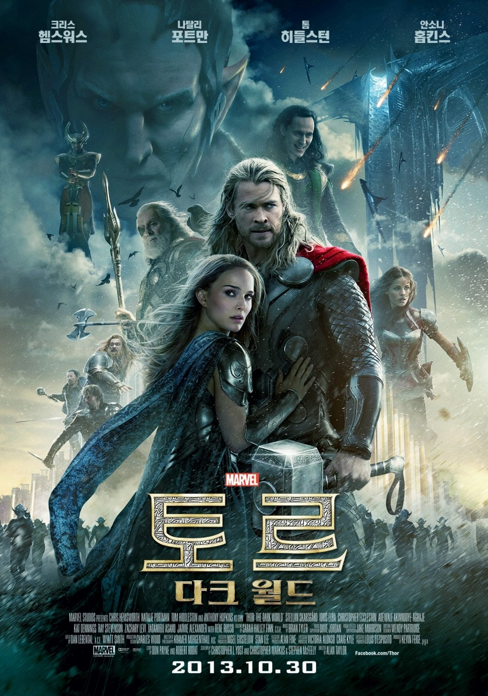
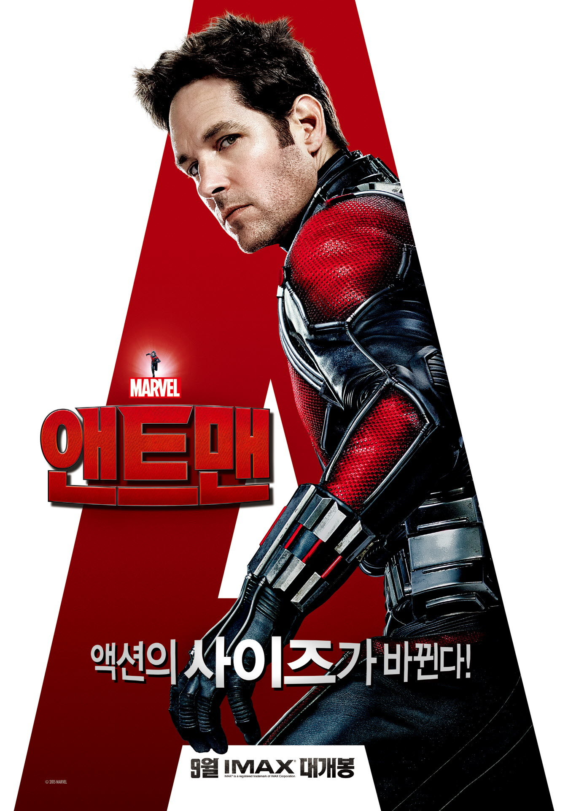

<!DOCTYPE html><!--C_21561097_이재권 !-->
<html>
<head>
  <meta charset="utf-8">
  <title>Phase_2</title>
  <link href="https://fonts.googleapis.com/css?family=Libre+Baskerville:700|Open+Sans:300,400,700,800" rel="stylesheet">
</head>
<style>
* {
  margin:0 0 0 0;
}
body {
  background-image: url("img/phase2_main.jpg");
  scroll-behavior: smooth;
  background-repeat: no-repeat;
  background-color: #000000;
}
#back img{
  width:100%;
  height:100%;
}
#gnb {
  font-family: 'Open Sans', sans-serif;
  float: right;
  font-size: 15px;
  font-weight: 700;
  position:fixed;
  color: #ffffff;
  background-color:none;
  width:100%;
  height:80px;
  left:300px;
  min-width: 1676px;
}
#gnb ul {
  margin:0 0 0 300px;
  list-style:none;
}
#gnb li {
  display:inline-block;
  padding:30px 250px 0 0;
}
a {
  color:#ffffff;
  text-decoration:none;
}
a:hover {
  color:#B51700;
}
.home {
  margin:0 0 0 0;
}
h1 {
font-family: 'Open Sans', sans-serif;
font-size: 70px;
color:#cc0000;
display: block;
padding:250px 0 0 70px;
font-weight: 900;
  }
#logo{
  position: absolute;
  margin: 10px 50px 0 70px;
  width: 205px;
  height: 61px;
}
#logo img{
  width: 205px;
  height: 61px;
}

h2 {
  font-family: 'Libre Baskerville', serif;
  font-size: 70px;
  color:#ffffff;
  display:inline-block;
  padding:400px 0 0 70px;
  font-weight: 700;
  word-spacing: 10px;
}
#text {
  font-family: 'Open Sans', sans-serif;
  color:#ffffff;
  display: block;
  padding:120px 0 0 80px;
  line-height: 30px;
  font-size:13px;
  font-weight: 300;
}

#section1 {
  color: #ffffff;
  align:center;
  margin: 300px 0 300px 0;
}
#section1 img{
  width: 230px;
  height: 350px;
}

#main {
  width: 100%;
  height: 1080px;
}
#content1 {
  float: left;
  margin:0 0 0 0;
  width: 600px;
}
#content2 {
  width: 600px;
}
#title {
  font-family: 'Open Sans', sans-serif;
  font-size: 25px;
  font-weight: 700;
  height: 30px;
  width: 400px;
  padding: 10px 20px 10px 20px;
  vertical-align:top;
}
#blah {
  font-family: 'Open Sans', sans-serif;
  height: 80px;
  width : 400px;
  padding: 10px 20px 10px 20px;
  vertical-align:bottom;
  line-height: 27px;
  font-size:13px;
  font-weight: 300;
}
#hop {
  margin: 0 250px 0 200px;
}
</style>
<body>

  <div id="logo"><a href="index.html"></a></div>
  <div id="gnb">
    <ul>
      <li><a href="phase1.html">Phase 1</a></li>
      <li><a href="phase2.html">Phase 2</a></li>
      <li><a href="phase3.html">Phase 3</a></li>
    </ul>
  </div>
  <section id="main">
  <h2>Phase 2</h2>
  <div id="text">어벤져스1의 성공에 힘을 얻은 마블은 페이즈2부터 주옥같은 명작들을 뽑아낸다.</br>
    이제 히어로들을 모르는 사람들도 대부분 없기 때문에 그전에 생소했던 토르나 캡틴아메리카또한 무난하게 성공한다.</br>
    페이즈2에서 아이언맨3는 아이언맨 시리즈중 역대급이라고 말할정도로 평이 좋다. 아이언맨의 겉면이 아닌 철학까지 보여줌으로써</br>
    마블의 철학을 담아냈다.</br>

    </br>
  </div>
</section>

  <section id="section1">
    <div id="hop">

    <table id="content1">
      <tbody>
        <tr>
        <th rowspan="2"></th>
        <td id="title">Iron man 3<br>2013</td>
        </tr>
        <td id="blah">
          자신의 저택이 습격당한 후 간신히 목숨을 건진 토니스타크는 잔인한 비밀실험을 통해
          초능력 군단을 만드는 세력으로부터 연인인 페퍼를 구출합니다. 아이언맨 시리즈 중 가장 완성도
          높고 아이언맨의 철학을 담은 영화였습니다.
      </tbody>
      </tbody>
    </table>


      <table id="content2">
        <tbody>
          <tr>
          <th rowspan="2"></th>
          <td id="title">Thor 2: Dark world<br>2013</td>
          </tr>
          <td id="blah">
            고대의 비밀명기인 에테르가 연인인 제인에게 흡수되자 토르는 이를 되찾으려는
            악의 세력과 싸우고 제인을 구합니다. 쿠키영상에서 리얼리티스톤에 대한 언급이 있었습니다.

        </tbody>
    </table>
  </div>

  </section>

  <section id="section1">
    <div id="hop">

    <table id="content1">
      <tbody>
        <tr>
        <th rowspan="2"></th>
        <td id="title">Captain America 2: Winter soldier<br>2014</td>
        </tr>
        <td id="blah">
          캡틴이 냉동되기 전 그의 하나뿐인 친구 버키에 대한 이야기를 다룹니다.
      </tbody>
      </tbody>
    </table>


      <table id="content2">
        <tbody>
          <tr>
          <th rowspan="2"></th>
          <td id="title">Guadians of Galaxy 1<br>2014</td>
          </tr>
          <td id="blah">
            마블 시네마틱 유니버스에서 다양한 공간이 나오는데 처음으로 우주를 선보인 영화입니다.
            명대사로 아이엠 그루트가 있습니다.
        </tbody>
    </table>
  </div>

  </section>

  <section id="section1">
    <div id="hop">

    <table id="content1">
      <tbody>
        <tr>
        <th rowspan="2"></th>
        <td id="title">Avengers 2: Age of Ultron<br>2015</td>
        </tr>
        <td id="blah">
          토니스타크가 뉴욕침공을 겪고 방어하기 위해 만든 AI가 역으로 어벤져스를 공격해 대항하는
          이야기입니다. 새로운 히어로인 퀵실버와 스칼렛 위치 그리고 비젼이 이 영화에서 처음 등장합니다.
      </tbody>
      </tbody>
    </table>


      <table id="content2">
        <tbody>
          <tr>
          <th rowspan="2"></th>
          <td id="title">Ant Man 1<br>2015</td>
          </tr>
          <td id="blah">
            전과자였던 스캇이 우연히 천재 과학자 행크핌의 집에서 슈트를 도둑질하는데 이것이 앤트맨 슈트
            였고 앤트맨으로서 임무를 수행하는 이야기입니다. 양자영역에 대한 내용이 나오는데 차후 매우
            중요한 내용입니다.
        </tbody>
    </table>
  </div>

  </section>

</body>
</html>
